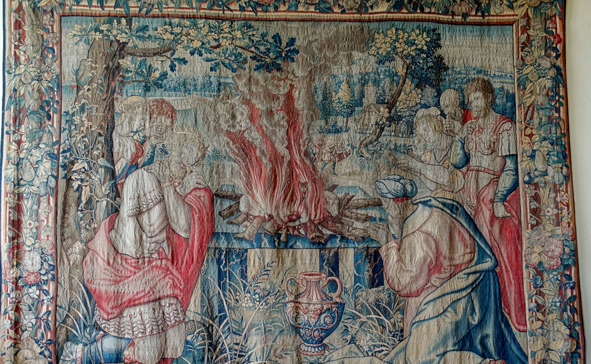

1 Samuel 13 — La Traducción Mister

Tejido en Bruselas en el tercer cuarto del siglo XVI, en lana y seda, y expuesto en Packwood House con el título «El sacrificio de Saúl». La escena es el holocausto de los versículos 9–10, con el fuego sobre el altar entre las figuras arrodilladas; cuál de ellas quisieron los tejedores que fuera Saúl y cuál Samuel es la lectura que la casa hace del tapiz, no algo tejido en él.

Notas del traductor — versículo por versículo
«Saúl tenía […] años». El versículo es la fórmula que el libro usa después para los reyes, como en «David tenía treinta años cuando comenzó a reinar» (2 Samuel 5:4, ya en estas páginas), pero donde debería estar el número de años el hebreo tiene ben-shanah, «hijo de un año»: Saúl tenía un año. Se ha perdido un número, y el corchete marca dónde. También se duda de los «dos años» de su reinado, porque la historia que sigue parece pedir más; Pablo da a Saúl cuarenta años (Hechos 13:21, ya en estas páginas), y Josefo dice que reinó dieciocho años en vida de Samuel y veintidós después de su muerte (Antigüedades 6.378, numerado 6.14.9 en Whiston). Los manuscritos principales del griego omiten el versículo entero, y también Josefo pasa directamente a los tres mil hombres. El estante llena o conserva el hueco de cinco maneras distintas. La NVI tiene «Saúl tenía treinta años cuando comenzó a reinar sobre Israel y su reinado duró cuarenta y dos años»; la RV60 «Había ya reinado Saúl un año»; la RV 1909 «HABIA ya Saúl reinado un año»; la TNM 1987 «Saúl tenía [?] años de edad cuando empezó a reinar».
Jonatán y la guarnición. Saúl se queda con tres mil hombres, dos mil consigo en Micmás y mil «con Jonatán», que entra en la historia sin presentación. «Y Jonatán hirió la guarnición de los filisteos que estaba en Gueba»: netsiv, la palabra de las guarniciones filisteas en Guibeá de Dios (10:5, ya en estas páginas), y aquí también el griego la toma como nombre de un hombre, «Nasib el filisteo». Saúl toca el cuerno de carnero, shofar, «diciendo: ¡Que lo oigan los hebreos!», con el nombre que los filisteos dan a Israel (4:9; ivrí); el griego lee «Los esclavos se han rebelado». La RV60 tiene «E hizo Saúl tocar trompeta por todo el país, diciendo: Oigan los hebreos»; la NVI «Jonatán atacó la guarnición filistea apostada en Gueba»; la TNM 1987 «hizo tocar el cuerno por todo el país».
Un hedor para los filisteos. La noticia que corre se lo atribuye al padre: «Saúl ha herido la guarnición de los filisteos, y además Israel se ha hecho un hedor para los filisteos», nivash, de baash. Es la queja de Jacob después de Siquem, «haciéndome un hedor a los habitantes de la tierra» (Génesis 34:30, ya en estas páginas), y la de los capataces a Moisés, «nos han hecho odiosos ante los ojos del faraón» (Éxodo 5:21, ya en estas páginas). Esta forma, «hacerse un hedor», aparece en tres versículos de la Biblia hebrea, todos en Samuel. La RV60 tiene «Israel se había hecho abominable a los filisteos»; la TNM 1987 «ahora Israel se ha hecho hediondo entre los filisteos»; la RV 1909 «Israel olía mal á los Filisteos».
Como la arena a la orilla del mar. Los filisteos traen «treinta mil carros y seis mil jinetes, y gente como la arena que está a la orilla del mar en multitud», y acampan en Micmás, «al oriente de Bet-avén», el punto de referencia del camino de los espías a Hai (Josué 7:2, ya en estas páginas). «Como la arena que está a la orilla del mar» aparece en cuatro versículos de la Biblia hebrea: la promesa a Abrahán (Génesis 22:17, ya en estas páginas), los reyes formados contra Josué (Josué 11:4, ya en estas páginas), este ejército, y la sabiduría de Salomón (1 Reyes 5:9, ya en estas páginas). Josefo conserva los treinta mil carros y añade trescientos mil de a pie (Antigüedades 6.97, numerado 6.6.1 en Whiston); tres mil carros es una lectura que se informa de otros testigos antiguos. La RV60 tiene «treinta mil carros, seis mil hombres de a caballo»; la NVI «Contaban con tres mil carros»; la TNM 1987 «al este de Bet-aven».
Cuevas, y hebreos que cruzan. «El pueblo se escondió en cuevas y en matorrales y en peñas y en hoyos y en cisternas», como Israel ante Madián, en «guaridas en los montes, cuevas y fortalezas» (Jueces 6:2, ya en estas páginas). «Y algunos hebreos pasaron el Jordán»: ivrim avru, el nombre y el verbo comparten sus letras, y los hebreos hacen honor a él. Josefo dice que la mayoría huyó al otro lado del Jordán, a la tierra de Gad y de Rubén (Antigüedades 6.99). La RV60 tiene «se escondieron en cuevas, en fosos, en peñascos, en rocas y en cisternas»; la TNM 1987 «en las cuevas y en los huecos y en los peñascos y en las bóvedas y en las cisternas»; la NVI «en los matorrales, entre las rocas, en las zanjas y en los pozos».
Siete días. «Y esperó siete días, hasta el plazo que Samuel [había fijado]»: la instrucción de 10:8, «Siete días esperarás, hasta que yo venga a ti y te haga saber lo que has de hacer». El hebreo no tiene verbo después de «Samuel», y el corchete lo suple. En el versículo 8 el texto escrito y el margen dan dos formas del verbo «esperar», y en el versículo 19 el texto escrito tiene «dijo» donde el margen lee «dijeron». Josefo hace que Samuel mande a Saúl esperar y preparar las víctimas, para sacrificar el séptimo día y luego pelear (Antigüedades 6.100, numerado 6.6.2 en Whiston). La RV60 tiene «conforme al plazo que Samuel había dicho»; la TNM 1987 «hasta el tiempo señalado que Samuel [había dicho]», con su propio corchete.
El holocausto. «Tráiganme el holocausto y los sacrificios de paz», las dos ofrendas que Samuel había dicho que bajaría a hacer (10:8), «y ofreció el holocausto» (olah). «Apenas había terminado … mira, llegó Samuel», y Saúl salió «para bendecirlo», el saludo corriente. El capítulo no dice si la falta es que un rey ofreciera el sacrificio o que no esperara; el cargo de Samuel es que no guardó «el mandamiento», y los lectores lo han entendido de las dos maneras. La TNM 1987 tiene «Saúl salió a su encuentro, y para bendecirlo»; la RV60 «Saúl salió a recibirle, para saludarle»; la NVI «Saúl salió a recibirlo y lo saludó».
«¿Qué has hecho?». Las primeras palabras de Samuel son la pregunta de Dios a Caín, «¿Qué has hecho?» (Génesis 4:10, ya en estas páginas), y la pregunta aparece en veinte versículos de la Biblia hebrea. Saúl da tres razones: el pueblo que se dispersa, «tú no venías dentro de los días fijados», los filisteos que se juntan. «Yo no he implorado el favor de Jehová»: jilliti pené, literalmente «ablandado el rostro». «Así que me forcé»: va-etapaq, el verbo de José, que «se contuvo» delante de sus hermanos (Génesis 43:31; 45:1, ya en estas páginas). La RV60 tiene «yo no he implorado el favor de Jehová. Me esforcé, pues, y ofrecí holocausto»; la TNM 1987 «no he ablandado el rostro de Jehová»; la NVI «Por eso me atreví a ofrecer el holocausto».
«Has obrado neciamente». «Has obrado neciamente»: niskalta, de sajal, la palabra de Labán a Jacob, «Ahora has obrado neciamente» (Génesis 31:28, ya en estas páginas). Esta forma aparece en cuatro versículos de la Biblia hebrea, y uno de ellos es la confesión de David después del censo (2 Samuel 24:10, ya en estas páginas). Las frases siguientes giran sobre un verbo, tsavah, «mandar»: Saúl no guardó «el mandamiento … que él te mandó»; al hombre nuevo se le «mandará» ser caudillo; «tú no has guardado lo que Jehová te mandó». La RV60 tiene «Locamente has hecho»; la TNM 1987 «Has obrado tontamente»; la NVI «¡Te has portado como un necio!».
Un hombre conforme a su corazón. «Tu reino no permanecerá», donde «Jehová habría afirmado tu reino sobre Israel para siempre». «Jehová ha buscado para sí un hombre conforme a su corazón»: la frase ish kilvavó aparece en un versículo de la Biblia hebrea. El hombre no se nombra; Pablo aplica las palabras a David, unidas a una línea del Salmo 89 (Hechos 13:22, ya en estas páginas). Será «caudillo», nagid, el propio título de Saúl (9:16). El hebreo está en pasado, «ha buscado»; el griego tiene futuro, «buscará». Josefo hace decir a Samuel que de otro modo Saúl y sus descendientes habrían reinado muchísimo tiempo (Antigüedades 6.104). La RV60 tiene «Jehová se ha buscado un varón conforme a su corazón»; la TNM 2019 «Jehová encontrará un hombre que complazca a su corazón»; la TNM 1987 «Jehová ciertamente se hallará un hombre agradable a su corazón», en futuro.
Seiscientos hombres, Guibeá y Gueba. Samuel sube «de Gilgal a Guibeá de Benjamín», y Saúl pasa revista a «unos seiscientos hombres» (paqad) de los tres mil. El griego es más largo aquí: Samuel se va por su camino, y el resto del pueblo sube tras Saúl de Gilgal a Guibeá. En el versículo 16 Saúl y Jonatán están en «Gueba de Benjamín». Guibeá (versículos 2 y 15) y Gueba (versículos 3 y 16) son dos ciudades de Benjamín a pocos kilómetros, cuyos nombres se diferencian en una sola letra en hebreo, y el estante no siempre las distingue. El griego añade que los seiscientos estaban allí «y lloraban»; Josefo lleva a Saúl a «la ciudad de Gabaón» con solo seiscientos hombres, la mayoría sin armas (Antigüedades 6.105). La NVI tiene «se quedaron en Gueba de Benjamín»; la RV60 «se quedaron en Gabaa de Benjamín»; la TNM 1987 «estaban morando en Gueba de Benjamín».
Los saqueadores. «Y los saqueadores salieron del campamento de los filisteos en tres compañías»: ha-mashjit, «el destructor», la palabra de la noche de la Pascua, «y no dejará que el destructor entre en vuestras casas» (Éxodo 12:23, ya en estas páginas), y aparece en nueve versículos de la Biblia hebrea. «Tres compañías» es el orden de batalla del propio Saúl en Jabes (11:11, ya en estas páginas). Los tres caminos van al norte, a Ofra, una ciudad de Benjamín (Josué 18:23, ya en estas páginas) y no la Ofra de Gedeón; al oeste, a Bet-horón; y al este, sobre «el valle de Zeboím», las hienas, hacia el desierto. La RV60 tiene «salieron merodeadores del campamento de los filisteos en tres escuadrones»; la TNM 1987 «la tropa de pilladores salía del campamento de los filisteos»; la NVI «salió una tropa de asalto dividida en tres escuadrones».
No había herrero. «Y no se hallaba herrero en toda la tierra de Israel»: jarash, un obrero de materia dura, «porque los filisteos decían: No sea que los hebreos se hagan espada o lanza». El griego lee «herrero de hierro». Josefo dice que los filisteos habían quitado las armas a los israelitas, les habían prohibido llevar o usar hierro, y obligaban a los labradores a acudir a ellos para que les repararan una reja o un azadón (Antigüedades 6.96, numerado 6.6.1 en Whiston). La RV60 tiene «en toda la tierra de Israel no se hallaba herrero»; la TNM 2019 «no había ni un herrero en toda la tierra de Israel»; la NVI «En todo el territorio de Israel no había un solo herrero».
Reja, azadón, hacha y azada. «Cada uno a afilar su reja de arado y su azadón y su hacha y su azada»: la primera palabra y la última, majareshet, tienen las mismas letras en hebreo y se vocalizan distinto, y qué herramienta era cada una no es seguro; el griego hace de la última una hoz. La RV60 tiene «la reja de su arado, su azadón, su hacha o su hoz»; la TNM 1987 «su reja de arado o su zapapico o su hacha o su hoz»; la RV 1909 «su reja, su azadón, su hacha, ó su sacho».
El pim. «Y el precio del afilado era un pim»: las dos palabras se perdieron para los lectores posteriores, y las versiones antiguas adivinaron. La respuesta salió de la tierra, donde se han hallado pequeñas pesas de piedra con la inscripción pym, de unos dos tercios de siclo (se informa aquí; la nota sobre Levítico 19:36, ya en estas páginas, dice lo mismo sobre las pesas); pim era el precio. «Un tercio» se entiende casi siempre como un tercio de siclo, por las horquillas y las hachas, y otros leen «horquillas de tres dientes». El griego ha perdido el sentido por completo y habla de una vendimia lista para cosechar y de tres siclos por diente. La RV 1909 tiene «Y cuando se hacían bocas en las rejas»; la RV60 «Y el precio era un pim por las rejas de arado»; la NVI «cobraban dos tercios de un siclo de plata».
Dos espadas. «El día de la batalla no se halló espada ni lanza en mano de ninguno del pueblo que estaba con Saúl y con Jonatán; pero se hallaron con Saúl y con Jonatán su hijo». Luego «la avanzada de los filisteos salió al paso de Micmás», matsav, el puesto al que Jonatán subirá en el capítulo siguiente. La RV60 tiene «Y la guarnición de los filisteos avanzó hasta el paso de Micmas»; la TNM 1987 «una avanzada de los filisteos salía a la garganta de Micmash»; la NVI «excepto Saúl y Jonatán».
Patrones que vale la pena recordar
Dónde esta traducción mantiene las palabras exactas y distintas: «[…] años», el hueco de 13:1 marcado y no rellenado; «guarnición» para netsiv, como en 10:5, y «avanzada» para matsav; «el cuerno de carnero»; «un hedor», como en Génesis 34:30; «hebreos»; «hasta el plazo que Samuel [había fijado]»; «¿Qué has hecho?», como en Génesis 4:10; «has obrado neciamente», como en Génesis 31:28; «mandar» conservado en los versículos 13–14; «caudillo» para nagid; «un hombre conforme a su corazón»; «los saqueadores» para ha-mashjit; «tres compañías», como en 11:11; y «pim», dejado como nombre.
Ecos pagados. Los siete días en Gilgal fijados en 10:8 se cumplen y se rompen; las guarniciones filisteas de 10:5 son heridas; al caudillo de 9:16 se le anuncia un sucesor; las tres compañías de Saúl de 11:11 vuelven como las del enemigo; y la advertencia de Samuel de que pueblo y rey podían ser barridos (12:25) empieza a cumplirse.
Ecos sembrados. Jonatán y la avanzada en el paso de Micmás (1 Samuel 14, ya en estas páginas), y el hombre conforme al corazón de Jehová (1 Samuel 16, ya en estas páginas).
Próxima entrega de este libro: 1 Samuel 14 — Jonatán y su escudero suben a la avanzada filistea de Micmás y el campamento entra en pánico, Saúl ata al ejército con una maldición contra la comida, Jonatán prueba la miel, el pueblo come con la sangre, y la suerte cae sobre Jonatán hasta que el pueblo lo rescata.